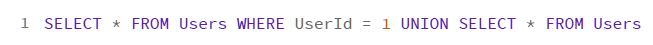

安全攻防技能
06 | XSS：当你“被发送”了一条微博时，到底发生了什么？
Web 安全
- 我们所谈论的 Web，是指所有基于 HTTP 或者其他超文本传输协议（RPC 等）开发的应用，包括：网页、App、API 接口等等。这类应用的共同点是：通过 HTTP 等文本协议，在客户端和服务端之间进行数据交换。客户端需要将服务端传出的数据展示渲染出来，服务端需要将客户端传入的数据进行对应的处理。而 Web 安全所涉及的正是这些应用中存在的各类安全问题。
XSS攻击例子
- 某一天，公司的网页应用中发生了一件事。有很多用户发送了同样类型的内容，而且这些内容都是一个带有诱惑性的问题和一个可以点击的链接。这些用户全部反馈说，这不是他们自己发的。前端开发表示，用户内容都是后端产生的，他不负责。后端开发表示，这些内容都是用户自己提交上来的，他也不负责。
- 这个事情的原型，其实是 2011 年微博真实出现的一次安全事件。整个事件的核心问题，其实出在这个可以点击的链接上。在这个事件中，黑客并不需要入侵到微博服务器中，只要用户点击了这个链接，就会“被发送”这样的博文。
XSS 攻击是如何产生的？
作为最普遍的网页语言，HTML 非常灵活，你可以在任意时候对 HTML 进行修改。但是，这种灵活性也给了黑客可趁之机：通过给定异常的输入，黑客可以在你的浏览器中，插入一段恶意的 JavaScript 脚本，从而窃取你的隐私信息或者仿冒你进行操作。这就是 XSS 攻击（Cross-Site Scripting，跨站脚本攻击）的原理。
三种 XSS 攻击
- 反射型 XSS
图示
黑客诱导你点击了某个链接，这个链接提供的服务，可能就是上述的搜索功能。网页在解析到链接的参数后，执行正常的搜索逻辑，但是因为漏洞，网页中被填入了黑客定义的脚本。使得用户的浏览器，最终执行的是黑客的脚本。
反射型 XSS 产生在前后端一体的网页应用中，服务端逻辑会改变最终的网页代码。但是，目前更流行的其实是前后端分离，这样网页的代码不会受服务端影响。
- 基于 DOM 的 XSS
图示
反射型 XSS 产生在前后端一体的网页应用中，服务端逻辑会改变最终的网页代码。但是，目前更流行的其实是前后端分离，这样网页的代码不会受服务端影响。
尽管服务端无法改变网页代码，但网页本身的 JavaScript 仍然可以改变。而黑客只要利用了这一点，同样能够在网页中插入自己的脚本。这也就是所谓的基于 DOM的 XSS 漏洞。
- 持久型 XSS
图示
当你在网页中搜索一个关键词时，实际上与这个关键词相关的所有搜索结果都会被展示出来。一旦这些搜索结果中，包含黑客提供的某个恶意 JavaScript 脚本，那么只要我们浏览了这个网页，就有可能会执行这些脚本。这就是持久型 XSS。因为这些恶意的搜索结果，会长期保存在服务端数据库中，所以它又叫作存储型 XSS。在应用中，存储用户的输入并对它们进行展示的地方，都可能出现持久型 XSS。比如：搜索结果、评论、博文等等。
相比前面两种 XSS 攻击来说，持久型 XSS 往往具备更强的危害性。因为对于一个反射型或者基于 DOM 的 XSS 来说，需要黑客诱导用户点击恶意的 URL，才能够成功地在用户浏览器上执行 JavaScript 脚本。这对黑客在诱导用户操作方面的能力提出了考验：并不是所有的用户都是小白，一些有经验的用户会在点击链接前进行一定的考虑。
而持久型 XSS 则不同，它是将恶意的 JavaScript 脚本写入到了正常的服务端数据库中，因此，只要用户正常的使用业务功能，就会被注入 JavaScript 脚本。所以说，持久型 XSS 在传播速度和传播范围上，会远远超出其他类型的 XSS。
通过 XSS 攻击，黑客能做什么？
- 窃取 Cookie
- 黑客可以窃取用户的 Cookie。因为黑客注入的JavaScript 代码是运行在 server.com 这个域名下的，因此，黑客可以在 JavaScript 中通过 document.cookie 获得Cookie 信息。
- 另外，需要我们注意的是，受 SOP（Same Origin Policy，同源策略）保护，我们在server.com 中是无法直接向 hacker.com 发送 GET 或者 POST 请求的。这也是为什么，在上面的例子中，我们需要通过 window.location 来执行跳转操作，间接地将 Cookie 信息发送出去。除了 window.location 之外，我们还可以通过加载 JavaScript 文件、图片等方式，向 attacker.com 发送带有 Cookie 的 GET 请求。
- 未授权操作
- 除了窃取敏感信息以外，黑客还可以利用 JavaScript 的特性，直接代替用户在 HTML 进行各类操作。
- 按键记录和钓鱼
- JavaScript 的功能十分强大，它还能够记录用户在浏览器中的大部分操作。比如：鼠标的轨迹、键盘输入的信息等。也就是说，你输入的账号名和密码，都可以被 JavaScript 记录下来，从而被黑客获取到。
- 另外，即使某个存在 XSS 漏洞的页面不具备任何输入框，黑客还可以通过修改 DOM，伪造一个登录框，来诱导用户在本不需要登录的页面，去输入自己的用户名和密码。这也是“钓鱼”的一种形式，在这个过程中用户访问的域名是完全正常的，只是页面被篡改了，所以具备更高的迷惑性。
如何进行 XSS 防护？
- 验证输入 OR 验证输出
防护的核心原则是：一切用户输入皆不可信。
验证输入可能会产生的两个问题
- 你将无法保存用户的原始输入信息。这样一来，当出现了 Bug 或者想要对黑客行为进行溯源时，你只能“推断”，而不能准确地获取用户的原始输入。
- 用户的内容可能会被多种语言获取和使用，提前编码或者处理，将产生未知的问题。比如，在旧版本的 PHP 中，就存在“ magic quotes”的漏洞，因为 PHP 无法处理某些编码的字符而导致崩溃。
因此，我更推荐在需要输出的时候去进行验证，即当需要展示的时候，我们再对内容进行验证，这样我们就能够根据不同的环境去采取不同的保护方案了。
- 编码
- 所谓编码，就是将部分浏览器识别的关键词进行转换（比如 < 和 >），从而避免浏览器产生误解。对于客户端来说，编码意味着，使用JavaScript 提供的功能对用户内容进行处理。
- 检测和过滤
那当发现某个用户的内容可能存在 XSS 攻击脚本时，我们该怎么处理呢？
- 处理选项有两个：拒绝或者过滤。
- 拒绝是最安全的选项，但会阻碍用户的使用流程，从用户体验的角度上来考虑的话，过滤会更被用户所接受。
- 过滤的流程也必须彻底。
- 错误案例
4.CSP
面对 XSS 这样一个很普遍的问题，W3C 提出了 CSP（Content Security Policy，内容安全策略）来提升 Web 的安全性。所谓 CSP，就是在服务端返回的 HTTP header 里面添加一个 Content-Security-Policy 选项，然后定义资源的白名单域名。浏览器就会识别这个字段，并限制对非白名单资源的访问。
配置样例如下所示：
那我们为什么要限制外域资源的访问呢？这是因为 XSS 通常会受到长度的限制，导致黑客无法提交一段完整的 JavaScript 代码。为了解决这个问题，黑客会采取引用一个外域JavaScript 资源的方式来进行注入。除此之外，限制了外域资源的访问，也就限制了黑客通过资源请求的方式，绕过 SOP 发送 GET 请求。目前，CSP 还是受到了大部分浏览器支持的，只要用户使用的是最新的浏览器，基本都能够得到很好的保护。
07 | SQL注入：明明设置了强密码，为什么还会被别人登录？
SQL 注入是什么？
- 通常来说，我们会将应用的用户信息存储在数据库中。每次用户登录时，都会执行一个相应的 SQL 语句。这时，黑客会通过构造一些恶意的输入参数，在应用拼接 SQL 语句的时候，去篡改正常的 SQL 语意，从而执行黑客所控制的 SQL 查询功能。这个过程，就相当于黑客“注入”了一段 SQL 代码到应用中。这就是我们常说的 SQL 注入。
两种主要的 SQL 注入方式
- 修改 WHERE 语句
- 黑客输入 “ or “”=”
- 执行任意语句
- 黑客只要在传入的 userId 参数中加入一个分号，就可以执行任意的 SQL语句了。比如，黑客想“删库跑路”的话，就令 userId 为 1;DROP TABLE Users，那么，后台实际执行的 SQL 就会变成下面这行代码，而数据库中所有的用户信息就都会被删除。
通过 SQL 注入攻击，黑客能做什么？
- 绕过验证
- 任意篡改数据
- 窃取数据
- 
- 消耗资源
- 除了获取数据之外，影响服务可用性也是黑客的目标之一。
- SQL 注入破坏可用性十分简单，可以通过完全消耗服务器的资源来实现。比如，在 Web后台中，黑客可以利用 WHILE 打造死循环操作，或者定义存储过程，触发一个无限迭代等等。在这些情况下，数据库服务器因为 CPU 被迅速打满，持续 100%，而无法及时响应其他请求。
如何进行 SQL 注入防护 ？
- 使用 PreparedStatement
- 通过合理地使用 PreparedStatement，我们就能够避免 99.99% 的 SQL 注入问题。
- 使用存储过程
- 存储过程防注入是将解析 SQL 的过程，由数据库驱动转移到了数据库本身。
- 验证输入
- SQL 注入的攻击发生在输入的时候，因此，我们只能在输入的时候去进行防护和验证；大部分数据库不提供针对 SQL 的编码，因为那会改变原有的语意，所以 SQL 注入没有编码的保护方案。
- 因此，对所有输入进行验证或者过滤操作，能够很大程度上避免 SQL 注入的出现。比如，在通过 userId 获取 Users 相关信息的示例中，我们可以确认 userId 必然是一个整数。因此，我们只需要对 userId 参数，进行一个整型转化（比如，Java 中的 Integer.parseInt，PHP 的 intval），就可以实现防护了。
08 | CSRF/SSRF：为什么避免了XSS，还是“被发送”了一条微博？
CSRF 攻击是如何产生的？
- 当我们在访问一个 Web 页面的时候，并不是我们自己去获取页面信息，而是浏览器去获取了这些信息，并将它们进行了展示。这就说明，你允许浏览器代表你去和 Web 的服务端进行交互。为了能够准确地代表你的身份，浏览器通常会在 Cookie 中存储一些必要的身份信息。所以，在我们使用一个网页的时候，只需要在首次访问的时候登录就可以了。
- 从用户体验上来说，这当然是非常方便的。但是，黑客正是利用这一点，来编写带有恶意JavaScript 脚本的网页，通过“钓鱼”的方式诱导你访问。然后，黑客会通过这些JavaScript 脚本窃取你保存在网页中的身份信息，通过仿冒你，让你的浏览器发起伪造的请求，最终执行黑客定义的操作。而这一切对于你自己而言都是无感知的。这就是CSRF（Cross-Site Request Forgery，跨站请求伪造）攻击。
- 图示
通过 CSRF 攻击，黑客能做什么？
- 和 XSS 一样，CSRF 也可以仿冒用户去进行一些功能操作的请求，比如修改密码、转账等等，相当于绕过身份认证，进行未授权的操作。
- 值得一提的是，尽管黑客通过 CSRF 能进行的操作没有 XSS 丰富，但 CSRF 在传播和攻击成本上都低于 XSS。这也就是说，即使你的网页中没有任何注入漏洞，但只要接口配置不当，就能够被 CSRF 利用。而黑客也只需要在自己的域名中，搭建一个诱导性的网页，就可以让任何访问网页的用户都遭受到 CSRF 攻击。而且，用户每天需要访问大量的网页，根本没有办法确认每一个网页的合法性。而从严格意义上来说，用户根本没有办法防止CSRF 攻击。因此，我们只能从应用本身入手去加强防护。
如何进行 CSRF 防护？
行业内标准的 CSRF 防护方法是CSRFToken。
CSRFToken
图示
通过前面的学习，我们知道，CSRF 是通过自动提交表单的形式来发起攻击的。所以，在前面转账的例子中，黑客可以通过抓包分析出 http://bank.com/transfer 这个接口所需要的参数，从而构造对应的 form 表单。因此，我们只需要在这个接口中，加入一个黑客无法猜到的参数，就可以有效防止 CSRF 了。这就是 CSRF Token 的工作原理。
因为 CSRF Token 是每次用户正常访问页面时，服务端随机生成返回给浏览器的。所以，每一次正常的转账接口调用，都会携带不同的 CSRF Token。黑客没有办法进行提前猜测，也就没有办法构造出正确的表单了。
二次验证
例子
- 当你进行各类支付操作的时候，银行网页通常会要求你输入支付密码。你可能会觉得奇怪，明明自己已经登录了，为什么还需要输入一个独立的支付密码呢？这其实和
CSRF Token 的原理一样：这个独立的支付密码是需要用户输入的，只存在于用户的记忆中，因此，也是黑客无法获取到的参数。 - 黑客通过 CSRF 攻击，替你发起了一笔转账。在支付的时候，银行会发起一个全新的页面，让你验证支付密码。这个时候你发现，这个支付请求不是你本人发起的，那你肯定不会输入支付密码来完成验证。所以，在用户进行支付这样的敏感操作时，应用通常会要求用户提供一些私密的信息，就是为了对 CSRF 攻击进行防护。
- 当你进行各类支付操作的时候，银行网页通常会要求你输入支付密码。你可能会觉得奇怪，明明自己已经登录了，为什么还需要输入一个独立的支付密码呢？这其实和
XSS和CSRF比较
- XSS攻击发生在当前域名，CSRF攻击发生在其他域名。总体来说，XSS攻击能够覆盖CSRF的危害，但XSS难度更好，传播能力更弱。
SSRF：同样的原理，发生在服务端又会发生什么？
图示
我们知道，服务端也有代理请求的功能：用户在浏览器中输入一个 URL（比如某个图片资源），然后服务端会向这个 URL 发起请求，通过访问其他的服务端资源来完成正常的页面展示。这个时候，只要黑客在输入中提交一个内网 URL，就能让服务端发起一个黑客定义的内网请求，从而获取到内网数据。这就是 SSRF（Server Side Request Forgery，服务端请求伪造）的原理。而服务端作为内网设备，通常具备很高的权限，所以，这个伪造的请求往往因为能绕过大部分的认证和授权机制，而产生很严重的后果。
比方说，当我们在百度中搜索图片时，会涉及图片的跨域加载保护，百度不会直接在页面中加载图片的源地址，而是将地址通过 GET 参数提交到百度服务器，然后百度服务器请求到对应的图片，再返回到页面展示出来。
这个过程中，百度服务器实际上会向另外一个 URL 地址发起请求（比如，上图中的http://s1.sinaimg.cn）。利用这个代理发起请求的功能，黑客可以通过提交一个内
网的地址，实现对内网任意服务的访问。这就是 SSRF 攻击的实现过程，也就是我们常说的“内网穿透”。
通过 SSRF 攻击，黑客能做什么？
- 内网探测
内外网一般是隔离的。所以，黑客在外网环境中，是无法知道内网有哪些服务器，这些服务器又分别提供了哪些服务。但是，通过一个加载图片的 SSRF 漏洞，黑客就能够对内网进行探测。
例子
在前面百度搜图的例子中，我们请求的地址是：https://image.baidu.com/search/detail?objurl=http://s1.sinaimg.cn/picture .jpg。因为 http://s1.sinaimg.cn/picture.jpg会正常返回一个图片，所以网页会展示出来对应的图片。
我们假定这样一个服务端逻辑：在这个请求过程中，服务端会判断 objurl 返回数据的Content Type 是否为 image/jpeg。那么，可能的返回结果就有三种：
- “是”，则展示图片；
- “不是”，则返回“格式错误”；
- 无响应，则返回“找不到图片”。
基于这三种返回逻辑，黑客可以构造一个恶意的请求地址： https://image.baidu.com/search/detail?objurl=127.0.0.1:3306
- 如果服务器返回“格式错误”，则代表服务端本地的 3306 端口可用；如果返回“找不到图片”，则代表不可用。我们知道，3306 是 MySQL 对应的端口号，因此，根据这个返回的信息，黑客就能够知道服务端本地是否开启了一个 MySQL 服务。接下来，黑客只需要不断重复这个过程，尝试不同的 IP 和端口号，就能够一点一点探测出整个内网的结构。
- 文件读取
接下来，我们说一下文件读取。服务器除了对图片的代理不做合法性判断之外，对很多其他的代理也不做判断，而是直接将代理的结果返回到前端。我们称这种情况为“有回显的SSRF”。在这种情况下，黑客不仅能够知道请求是否成功了，还能够知道具体返回的内容。
在 URI 中，开头的 http:// 和 https:// 代表需要使用什么协议去进行请求。除了 HTTP 之外，URI 还有很多种协议可以选择，比如 file:// 就是直接读取本地的文件。通过输入file://etc/passwd，黑客就能够通过一个请求获取到本地的 passwd 文件，从而知道本地有哪些用户。经过不断地尝试，黑客就能够把整个服务器中的文件内容都给拉取出来，这其中包括密钥、源码等极度敏感的信息。
例子
- 有一个黑客。他通过 SSRF 攻击拿到了服务端的源码，然后通过对源码的分析，找到了一个 SQL 注入的漏洞，再利用 SSRF 发起对内网的 SQL 注入攻击，从而拿到了
内网的命令执行权限。
- 有一个黑客。他通过 SSRF 攻击拿到了服务端的源码，然后通过对源码的分析，找到了一个 SQL 注入的漏洞，再利用 SSRF 发起对内网的 SQL 注入攻击，从而拿到了
如何进行 SSRF 防护？
白名单的限制永远是最简单、最高效的防护措施。SSRF 中的白名单，就是对用户提交上来的目标 URL 进行限制。比如，只允许是同一个域名下的 URL。
可以理解为，让百度图片的代理服务只允许代理 baidu.com 的 URL。但是，很多时候，因为业务功能的设计，白名单的限制并不可行。
在这种时候，我们可以对协议和资源类型等进行限制。比如：对于使用协议，我们只允许HTTP 或者 HTTPS 协议；对于返回的内容，我们只允许图片格式的内容。通过这些限制，虽然不能完全阻止黑客发起 SSRF 攻击，但也大大降低了黑客能够造成的危害。
除此之外，因为 SSRF 最终的结果，是接受代理请求的服务端发生数据泄漏。所以，SSRF防护不仅仅涉及接收 URL 的服务端检测，也需要接受代理请求的服务端进行配合。在这种情况下，我们就需要用到请求端限制，它的防护措施主要包括两个方面。
- 第一，为其他业务提供的服务接口尽量使用 POST，避免 GET 的使用。因为，在 SSRF 中（以及大部分的 Web 攻击中），发起一个 POST 请求的难度是远远大于 GET 请求的。因为默认的请求方式是 GET，而发起 POST 请求，需要在发起 HTTP 请求的时候进行配置。很多安全漏洞中不包含能够配置协议的地方。在上述百度图片的例子中，黑客显然就只能发起 GET 请求。如果某个敏感服务是 POST 的，黑客就无法请求到相关资源了。
- 第二，为其他业务提供的服务接口，最好每次都进行验证。通过 SSRF，黑客只能发起请求，并不能获取到服务端存储的验证信息（如认证的 key 和 secret 等）。因此，只要接受代理请求的端对每次请求都进行完整的验证，黑客无法成功通过验证，也就无法完成请求了。
09 | 反序列化漏洞：使用了编译型语言，为什么还是会被注入？
背景
- 2015 年，Java 曾被曝出一个严重的漏洞，很多经典的商业框架都因此受到影响，其中最知名的是WebLogic。据统计，在网络中公开的 WebLogic 服务有 3 万多个。其中，中国就有 1 万多个外网可访问的 WebLogic 服务。因此，WebLogic 的反序列化漏洞意味着，国内有 1 万多台服务器可能会被黑客攻陷，其影响的用户数量更是不可估量的。
- 你可能要说了，我实际工作中并没有遇到过反序列化漏洞啊。但是，你一定使用过一些序列化和反序列化的工具，比如 Fastjson 和 Jackson 等。如果你关注这些工具的版本更新，就会发现，这些版本更新中包含很多修复反序列化漏洞的改动。而了解反序列化漏洞，可以让你理解，Java 作为一种先打包后执行的语言，是如何被插入额外逻辑的；也能够让你对Java 这门语言的安全性，有一个更全面的认知。
反序列化漏洞是如何产生的？
应用在输出某个数据的时候，将对象转化成字符串或者字节流，这就是序列化操作。我们把这个过程反过来，就是反序列化操作，也就是应用将字符串或者字节流变成对象。
序列化和反序列化有很多种实现方式。比如 Java 中的 Serializable 接口（或者 Python 中的 pickle）可以把应用中的对象转化为二进制的字节流，把字节流再还原为对象；还有XML 和 JSON 这些跨平台的协议，可以把对象转化为带格式的文本，把文本再还原为对象。
那反序列化漏洞到底是怎么产生的呢？问题就出在把数据转化成对象的过程中。在这个过程中，应用需要根据数据的内容，去调用特定的方法。而黑客正是利用这个逻辑，在数据中嵌入自定义的代码（比如执行某个系统命令）。应用对数据进行反序列化的时候，会执行这段代码，从而使得黑客能够控制整个应用及服务器。这就是反序列化漏洞攻击的过程。
步骤
- 黑客构造一个恶意的调用链（专业术语为 POP，Property OrientedProgramming），并将其序列化成数据，然后发送给应用；
- 应用接收数据。大部分应用都有接收外部输入的地方，比如各种 HTTP 接口。而这个输入的数据就有可能是序列化数据；
- 应用进行反序列操作。收到数据后，应用尝试将数据构造成对象；
- 应用在反序列化过程中，会调用黑客构造的调用链，使得应用会执行黑客的任意命令。
那么，在这个反序列化的过程中，应用为什么会执行黑客构造的调用链呢？这是因为，反序列化的过程其实就是一个数据到对象的过程。在这个过程中，应用必须根据数据源去调用一些默认方法（比如构造函数和 Getter/Setter）。除了这些方法，反序列化的过程中，还会涉及一些接口类或者基类（简单的如：Map、List
和 Object）。应用也必须根据数据源，去判断选择哪一个具体的接口实现类。也就是说，黑客可以控制反序列化过程中，应用要调用的接口实现类的默认方法。通过对不同接口类的默认方法进行组合，黑客就可以控制反序列化的调用过程，实现执行任意命令的功能。
通过反序列化漏洞，黑客能做什么？
通过反序列化漏洞，黑客可以调用到Runtime.exec()来进行命令执行。换一句话说，黑客已经能够在服务器上执行任意的命令，这就相当于间接掌控了你的服务器，能够干任何他想干的事情了。
即使你对服务器进行了一定的安全防护，控制了黑客掌控服务器所产生的影响，黑客还是能够利用反序列化漏洞，来发起拒绝服务攻击。比如，曾经有人就提出过这样的方式，通过HashSet 的相互引用，构造出一个 100 层的 HashSet，其中包含 200 个 HashSet 的实例和 100 个 String，结构如下图所示。
对于多层嵌套的对象，Java 在反序列化过程中，需要调用的方法呈指数增加。因此，尽管这个序列化的数组大概只有 6KB，但是面对这种 100 层的数据，Java 所需要执行的方法数是近乎无穷的（n 的 100 次方）。也就是说，黑客可以通过构建一个体积很小的数据，增加应用在反序列化过程中需要调用的方法数，以此来耗尽 CPU 资源，达到影响服务器可用性的目的。
如何进行反序列化漏洞防护 ？
- 认证和签名
- 首先，最简单的，我们可以通过认证，来避免应用接受黑客的异常输入。要知道，很多序列化和反序列化的服务并不是提供给用户的，而是提供给服务自身的。比如，存储一个对象到硬盘、发送一个对象到另外一个服务中去。对于这些点对点的服务，我们可以通过加入签名的方式来进行防护。比如，对存储的数据进行签名，以此对调用来源进行身份校验。只要黑客获取不到密钥信息，它就无法向进行反序列化的服务接口发送数据，也就无从发起反序列化攻击了。
- 限制序列化和反序列化的类
- 在反序列化漏洞中，黑客需要构建调用链，而调用链是基于类的默认方法来构造的。然而，大部分类的默认方法逻辑很少，无法串联成完整调用链。因此，在调用链中通常会涉及非常规的类，比如，demo 中的 InvokerTransformer。我相信 99.99% 的人都不会去序列化这个类。因此，我们可以通过构建黑名单的方式，来检测反序列化过程中调用链的异常。
- 在 Fastjson 的配置文件中，就维护了一个黑名单的列表，其中包括了很多可能执行代码的方法类。这些类都是平常会使用，但不会序列化的一些工具类，因此我们可以将它们纳入到黑名单中，不允许应用反序列化这些类（在最新的版本中，已经更改为 hashcode 的形式）。
- 我们在日常使用 Fastjson 或者其他 JSON 转化工具的过程中，需要注意避免序列化和反序列化接口类。这就相当于白名单的过滤：只允许某些类可以被反序列化。
3.RASP（Runtime Application Self-Protection，实时程序自我保护） 检测
背景
- 通常来说，我们可以依靠第三方插件中自带的黑名单来提高安全性。但是，如果我们使用的是 Java 自带的序列化和反序列化功能（比如ObjectInputStream.resolveClass），那我们该怎么防护反序列化漏洞呢？如果我们想要替这些方法实现黑名单的检测，就会涉及原生代码的修改，这显然是一件比较困难的事。
RASP 通过 hook 等方式，在这些关键函数的调用中，增加一道规则的检测。这个规
则会判断应用是否执行了非应用本身的逻辑，能够在不修改代码的情况下对反序列化漏洞攻击实现拦截。RASP是最好的检测反序列化攻击的方式。
因为，如果使用认证和限制类这样的方式来检测，就需要一个一个去覆盖可能出现的漏洞点，非常耗费时间和精力。而 RASP 则不同，它通过 hook 的方式，直接将整个应用都监控了起来。因此，能够做到覆盖面更广、代码改动更少。
但是，因为 RASP 会 hook 应用，相当于是介入到了应用的正常流程中。而 RASP 的检测规则都不高效，因此，它会给应用带来一定的性能损耗，不适合在高并发的场景中使用。但是，在应用不受严格性能约束的情况下，更推荐使用 RASP。这样，开发就不用一个一个去对漏洞点进行手动修补了。
10 | 信息泄漏：为什么黑客会知道你的代码逻辑？
背景
- 你平时在 Debug 的时候，一定首先会去查看错误信息。根据错误信息，你能够了解究竟是什么情况引发了什么样的错误。同样地，黑客也能够通过错误信息，推断出你的后台代码逻辑。
间接泄漏
原理
- 通过拼凑各种零散的信息，还原出代码整体的面貌，然后有针对性地进行攻击
分类
注释信息
- 利用“白盒”检测，扫描线上源代码进行防护
错误信息
一方面是要通过正确的配置文件，避免错误信息被展示到前端；
另一方面是要对错误信息进行检测，这里就需要用到“黑盒”检测了。
- 所谓“黑盒（Black Box Testing，功能测试）”，就是在不获取代码的情况下，直接运行应用，然后对应用的请求和响应进行扫描。比如，在错误信息泄漏的场景中，“黑盒”检测可以向应用发起一些必然会导致错误的请求（比如上述例子中的单引号），然后观察应用是返回完整的错误日志，还是返回某些经过处理的页面。
返回信息
- 通过直接将返回信息模糊化、统一化进行防护
直接泄漏
原理
最常见、最普遍的泄露方式
分类
版本管理工具中的隐藏文件
以 SVN 为例
- SVN 会在项目目录中创建一个.svn 文件夹，里面保存了应用每一个版本的源文件信息，这也是 SVN 实现代码回滚的数据基础。如果 SVN 可以通过.svn 中的数据提取应用任意版本的代码，那黑客也可以。只要你没有在上线代码的时候删除其中的.svn 目录，那就代表黑客可以通过.svn 中的 URL 访问里面的所有文件。接下来，只需要通过执行简单的脚本，黑客就可以回溯出一个完整版本的代码了。
- 对于这种因为目录中额外内容（.svn/.git）导致的源码泄漏，我们一方面需要对线上代码进行人工的代码审查，确保无关的文件和文件夹被正确地清除；另一方面，我们也可以在HTTP 服务中对部分敏感的路径进行限制。比如，在 Apache httpd 中配置下面的内容，来禁止黑客对.svn 和.git 目录的访问。
上传代码到 GitHub
- Git 除了是一个版本管理工具之外，还是一个很流行的代码管理工具。除了前面讲过的隐藏文件漏洞之外（Git 会生成.git，同样包含应用各种版本的文件信息），Git 还存在将代码上传到公开平台的问题。但是，使用 GitHub 上传代码通常属于个人行为，所以，我们很难从技术层面上进行预防。